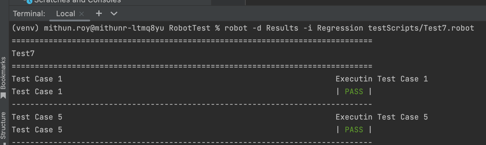
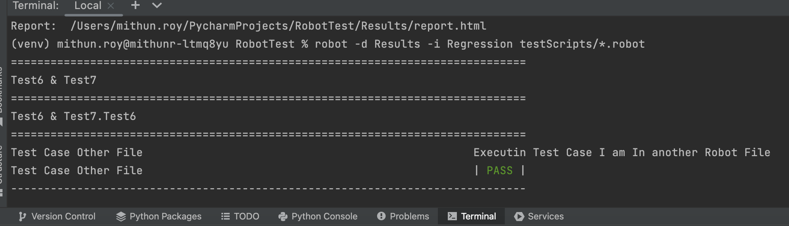
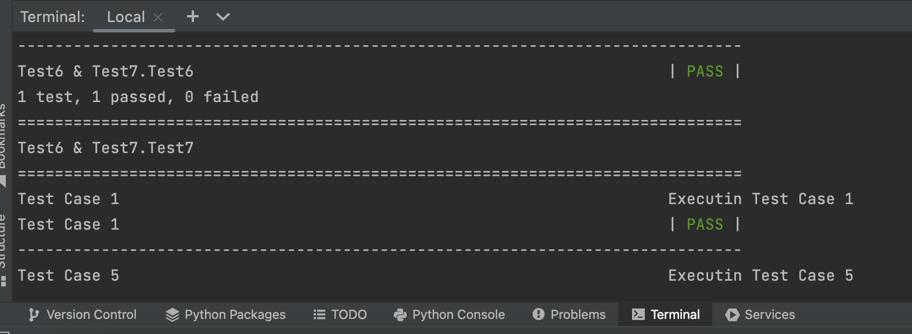

Robot : How To Run Specific Type Of Test Using TAG
Consider The Below Code ...
*** Settings *** Library SeleniumLibrary *** Variables *** *** Test Cases *** Test Case 1 [tags] Regression Log To Console Executin Test Case 1 Test Case 2 [tags] Smoke Log To Console Executin Test Case 2 Test Case 3 [tags] Sanity Log To Console Executin Test Case 3 Test Case 4 [tags] End To End Log To Console Executin Test Case 4 Test Case 5 [tags] Regression Log To Console Executin Test Case 5 *** Keywords ***
In above example we can say --
[tags] Keyword To Declate A TAG
Regression , Smoke , Sanity , End To End 4 different types of TAG ... using in Test Suite
Test Case 1 , Test Case 2 .....Test Case 5 5 Test Cases with 4 different tags
How To Run a All Tests following a Specific TAG In A perticular .robot file?
robot -d Results -i Regression testScripts/Test.robot
Explaining above command below --
robot Keyword To Run Robot Test.
-d Results To Run Test Result In Results Folder.
-i Regression Run test cases having TAG as 'Regression'. Here 'i' stands for Include
testScripts Directory having all .robot file.
Test.robot Run only Test.robot file.
As per this command in Pycharm Console it should execute Test Case 1 and Test Case 5

How To Run a All Tests following a Specific TAG present in All .robot files?
robot -d Results -i Regression testScripts/*.robot
Explaining above command below --
robot Keyword To Run Robot Test.
-d Results To Run Test Result In Results Folder.
-i Regression Run test cases having TAG as 'Regression'. Here 'i' stands for Include
testScripts Directory name having all .robot file.
*.robot Run All .robot files present in Directory testScripts
As per this command in Pycharm Console it should execute 'Test Case 1' and 'Test Case 5' & 'Test Case Other File' all following 'Regression' TAG

